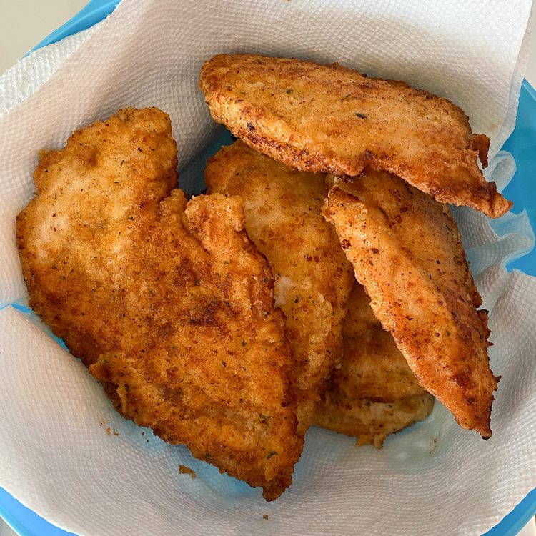

Homemade lasagna

Description
This actually uses my breading for Chicken Fried Steak---my wife suggested we try it with chicken breasts, and it was delicious!
Ingredients
- 2 teaspoons garlic powder, or to taste
- 1 teaspoon ground black pepper
- 1 teaspoon salt
- 1 teaspoon paprika
- ½ cup seasoned bread crumbs
- 1 cup oil for frying, or as needed
- 1 clove garlic, crushed
Steps
- Heat the oil
- Mix the ingredients
- Fry the chicken